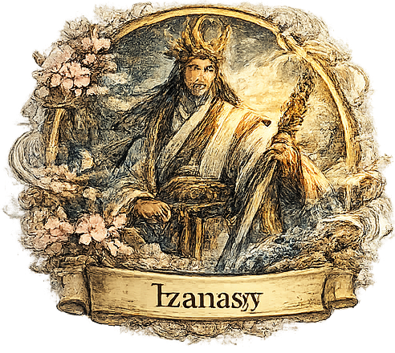

Dioses
Amaterasu
Amaterasu Omikami es la diosa del sol y una de las figuras más importantes del sintoísmo. Es considerada la protectora de Japón y, según la tradición, de ella desciende la familia imperial japonesa. Representa la luz, la vida, el orden y la prosperidad. Su mito más famoso cuenta que se escondió en una cueva y el mundo quedó en oscuridad.
Susanoo
Susanoo no Mikoto es el hermano de Amaterasu y es conocido como el dios del mar, las tormentas y el caos. Tiene una personalidad impulsiva y destructiva, pero también es un héroe en algunas leyendas. Su historia más famosa es cuando derrotó al monstruo Yamata-no-Orochi (un dragón de ocho cabezas) y encontró la espada legendaria Kusanagi.
Tsukuyomi
Tsukuyomi-no-Mikoto es el dios de la luna y hermano de Amaterasu. Representa la noche, el misterio y el equilibrio con el Sol. Según la mitología, se separó de Amaterasu después de un conflicto, y por eso el sol y la luna nunca están juntos en el cielo al mismo tiempo.
Izanagi e Izanami
Izanagi (dios masculino) e Izanami (diosa femenina) son los dioses creadores del mundo y de las islas de Japón. Según el mito, crearon la tierra removiendo el mar con una lanza sagrada. También dieron origen a otros dioses importantes. Izanami murió al dar a luz al dios del fuego, y su historia se conecta con el origen de la muerte y el inframundo en Japón.
